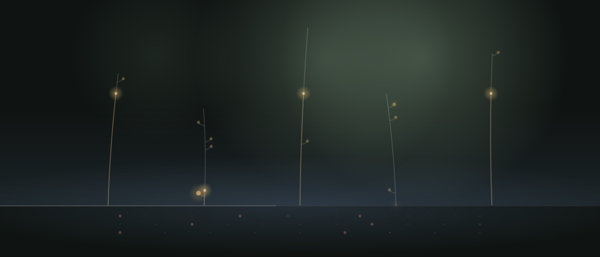
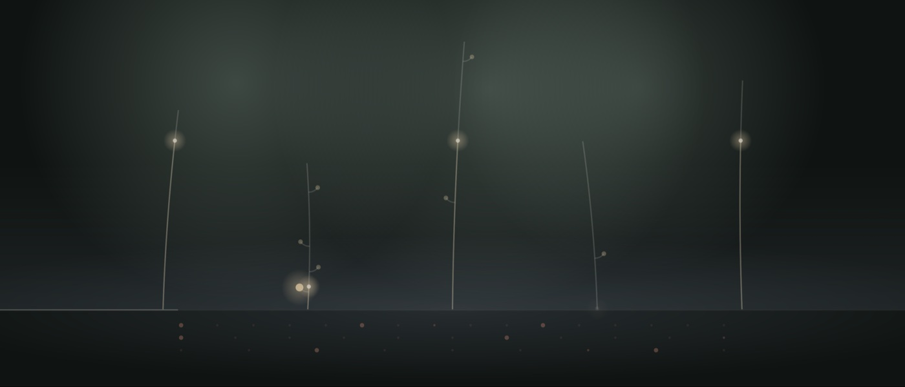
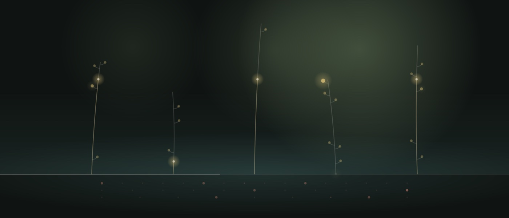
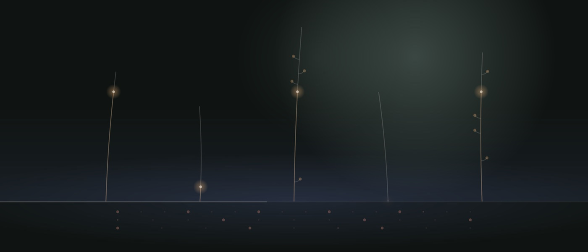
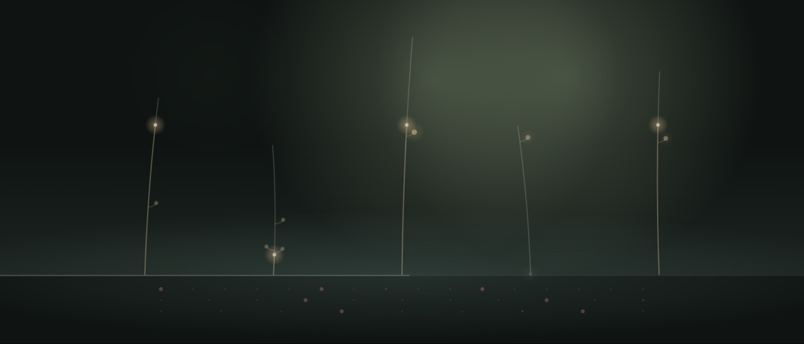
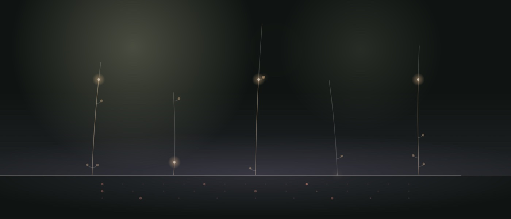

Pieces
Notes on the six pieces in Meadow.
Each piece is a scale and a set of starting values. The notes below describe the mood each one aims for, and which settings give it that sound. All settings can be changed in the app, and each piece keeps its own.
Harbour
D Dorian

Harbour is the home piece. It’s the one Meadow opens with, and every setting sits at its default. It aims for a calm, steady middle ground: slow chords, scattered bells, a soft pulse and a little texture, all in balance.
Dorian is a minor scale with one raised note, which keeps it from sinking into sadness. The mood is a grey morning by the water, quiet and a little wistful but not heavy.
What makes it sound this way
- D Dorian gives minor chords with a hopeful lift.
- All five layers are present and none of them leads.
- The chord changes about every 40 seconds.
- Weather sits at the midpoint, so the music swells and recedes gently over several minutes.
Low Cloud
A minor

Low Cloud is the darkest and slowest of the six. It aims for stillness: the feeling of a heavy sky, or the last hour before sleep.
The pad breathes in long, slow cycles. The bells are few and far between, and there is no pulse at all. Everything sits deep in a large reverb.
What makes it sound this way
- A natural minor is the plainest dark scale.
- Brightness is 0.2, so the pad is soft and muffled.
- Breath is 0.9, so each pad voice takes nearly twice as long to swell and fade.
- Density is 0.25, so the bells are sparse.
- The pulse is off.
- Reverb is 0.8 and reverb size is 0.9, the largest, longest space of any piece.
- The chord changes only about every 100 seconds.
Glasshouse
F Lydian

Glasshouse is about light: sun through glass, warm air, plants that seem to hang in it. The bells lead here. They sit an octave higher and are busier and brighter than in any other piece. The pad and drone stay low underneath.
Lydian is a major scale with a raised fourth, which gives a floating, slightly unreal quality. The chords never quite settle, and that suits a piece built on bells.
What makes it sound this way
- F Lydian has a raised fourth, which sounds open and suspended.
- The bells are at 0.8 and density at 0.6, the most bells of any piece.
- The bell octave is +1, so the bells ring in the higher register.
- Bell tone is 0.6, which gives a little more metallic shine in each strike.
- The pad is lowered to 0.4 and the drone to 0.2, so the bells sit in front.
- There is no pulse.
Night Ferry
E minor pentatonic

Night Ferry is a crossing in the dark: engine hum, lights on the water, a steady rocking. It’s the most rhythmic piece. A slow, swung pulse runs underneath, like a heartbeat or the throb of a hull. The echoes wobble like an old tape, and a layer of texture adds hiss and air.
The minor pentatonic has only five notes, with no semitone steps, so nothing clashes. The piece can stay moody without turning tense.
What makes it sound this way
- E minor pentatonic is dark but smooth, with no rubbing notes.
- The pulse is at 0.45, the most prominent of any piece.
- The tempo is 58, slower than the default of 66, with swing at 0.3, so the beat leans and rolls.
- Hits are 0.5, so the pattern is fuller.
- Wow is 0.5, which gives the echoes a clear tape wobble.
- Texture is 0.3, twice the default, for more grain and hiss.
Salt Marsh
G major pentatonic

Salt Marsh is open country under a big sky. Wind moves across it, and the light keeps changing. It’s the most changeable piece. The weather swings widely, so over a few minutes it thins out, fills up, brightens and darkens. Long echoes trail behind each bell.
The major pentatonic is bright and open, and it sounds calm in any combination, so the piece can wander without losing its peace.
What makes it sound this way
- G major pentatonic is bright and open, with no tense intervals.
- Weather is 0.8, the widest slow swings of any piece.
- Evolve is 0.6, so the bell patterns change more often.
- Echo is 0.6 and echo feedback 0.65, so the repeats are louder and last longer.
- Texture is 0.4, the most of any piece, for a constant breath of wind and noise.
First Light
C major

First Light is early morning: the sun coming up, the day starting, a quiet kind of optimism. It’s the brightest and most active piece. The chords change often and the pad breathes faster. Sevenths turn up more often, which adds warmth to the harmony. A light pulse at a walking pace keeps it moving.
C major is the plainest, most settled scale, so the movement feels hopeful rather than restless.
What makes it sound this way
- C major is bright and resolved.
- Brightness is 0.6, so the pad tone is open and clear.
- Colour is 0.6, so about two chords in three include a seventh.
- Breath is 0.3, so the pad swells and fades more quickly.
- The chord changes about every 25 seconds, the fastest of any piece.
- The pulse is at 0.2, a light touch, with the tempo at 80, the quickest of the six.